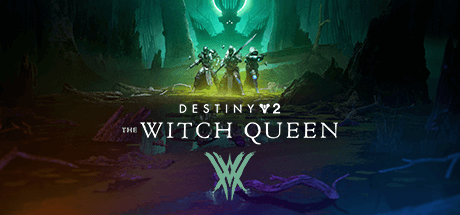

Destiny 2

Bungie is at the center of controversy yet again because of trying to make a no guardian left behind kind of video game. The player base feels that it does more harm than good whenever Bungies tries to implement changes that punishes skillful players. Content creators have not minced any words in their videos when giving their thoughts on how AE or the airborne effectiveness stat continues to make the game seem unplayable to them. The last time players felt this way was when stasis was introduced as a subclass element into the game being described as taking away a steering wheel in a racing game. What do you think? Should other players have to suffer simply because another group of players refuse to invest time into getting better at the game they claim to enjoy?